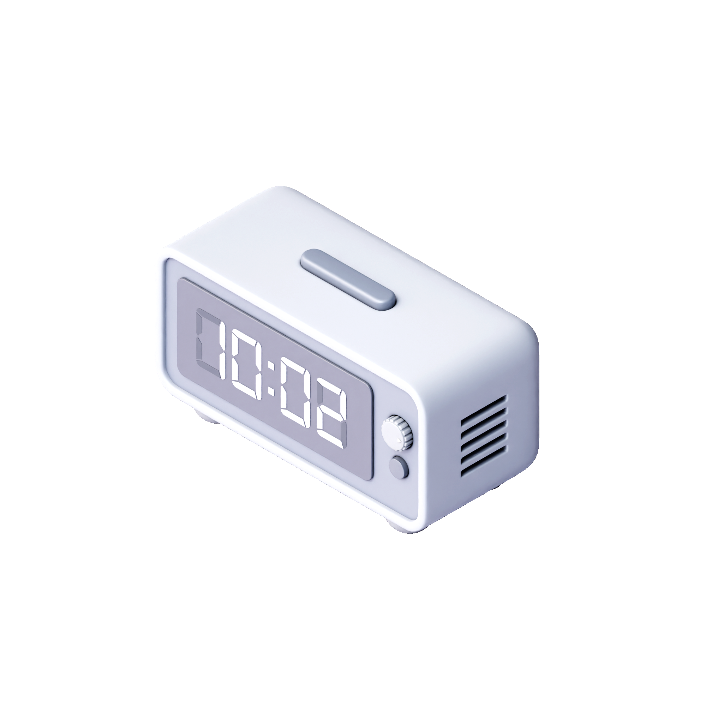

Setup time

to
Done
“Setup Time” allows you to specify when your security system should be active. Customize time periods for arming and disarming your system to align with your daily schedule and security needs!